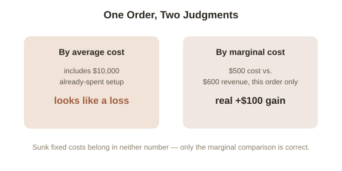

Chapter 2: The Marginal Decision Rule
Chapter 1 established opportunity cost as what a choice really costs. This chapter gives the actual decision rule built on top of it — the single most-used tool in the whole field, and one that quietly overturns a very natural but wrong way most people evaluate decisions.
The marginal decision rule
Marginal cost is what one additional unit of something actually costs — one more hour worked, one more item produced, one more client taken on. Marginal benefit is what that same additional unit actually gains. The decision rule is simple to state and easy to misapply: do the next unit if, and only if, its marginal benefit exceeds its marginal cost — not the average cost of everything so far, and not the total picture, just this next specific increment.
Why average cost is often the wrong number to look at
This is the part that trips people up. Imagine a small workshop that's already spent $10,000 on fixed setup costs (rent, equipment) and is deciding whether to take one more order that would bring in $600 in revenue but cost $500 in materials and labor to fulfill. The average cost per order so far, including that $10,000 in sunk setup costs spread across everything produced, might look much higher than $500 — which makes the $600 order look unprofitable if judged against the average. But the $10,000 is already spent regardless of whether this order is taken (it's a sunk cost — more on this directly in Chapter 6) — the only number relevant to this specific decision is the $500 marginal cost against the $600 marginal benefit. Taking the order adds $100 of real value, full stop, no matter how unprofitable the business looks on an average-cost basis.

Where this shows up constantly, once you're looking for it
This exact confusion — average versus marginal — shows up everywhere real decisions get made. A freelancer deciding whether to take one more small project asks the wrong question if they divide their total desired income by total hours and compare that average rate to the new project's pay; the right question is whether this specific project's payment exceeds what this specific block of time would otherwise be worth. A business deciding whether to stay open one more hour asks the wrong question if it compares that hour's revenue to the store's average revenue per hour across the whole day; the right comparison is that hour's marginal revenue against that hour's marginal cost (extra staff time, extra utilities) alone.
Try this
Ideas for noticing or testing this in your own life.
- Find one recurring decision you evaluate using an average ("my time is worth $X/hour," "this business makes $Y per order on average") and re-run it using only the marginal numbers for the next specific unit — does the decision change?
Worth pulling on?
A few loose threads from this chapter — if any of these genuinely grab you, that's a good sign of where to go next.
- The workshop example leaned on a distinction between fixed and variable costs without fully defining it. → Picked up directly in Chapter 3.